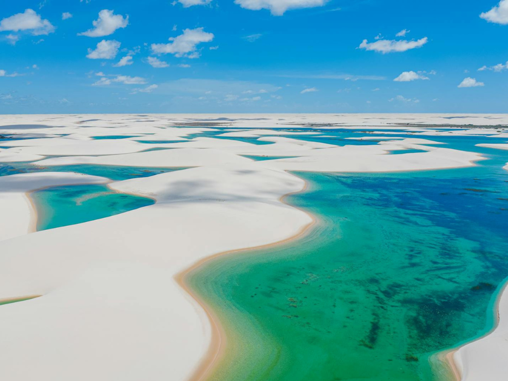

O Maranhão é um estado localizado na região Nordeste do Brasil, conhecido por sua diversidade cultural, riquezas naturais e importante patrimônio histórico. Sua capital, São Luís, é famosa pelo centro histórico com construções coloniais e azulejos portugueses, reconhecido como Patrimônio Mundial pela UNESCO. O estado também abriga os impressionantes Parque Nacional dos Lençóis Maranhenses, uma das paisagens naturais mais bonitas do país, com dunas e lagoas de águas cristalinas. A cultura maranhense é marcada por manifestações tradicionais como o bumba meu boi, o tambor de crioula e a culinária típica baseada em frutos do mar, arroz e especiarias regionais.

Voltar